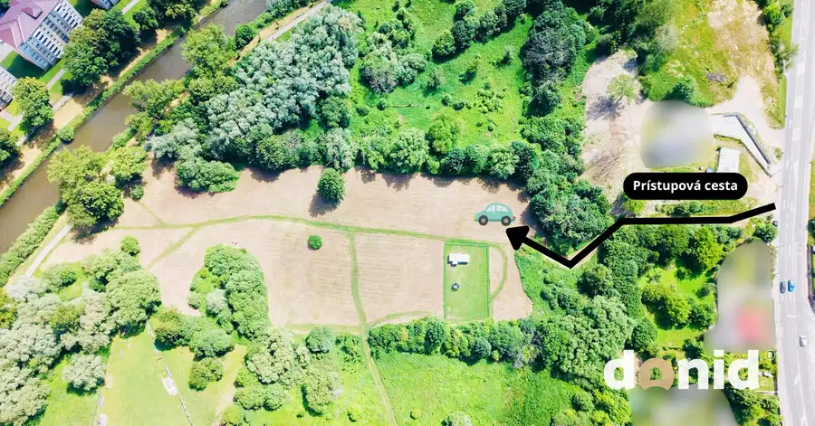
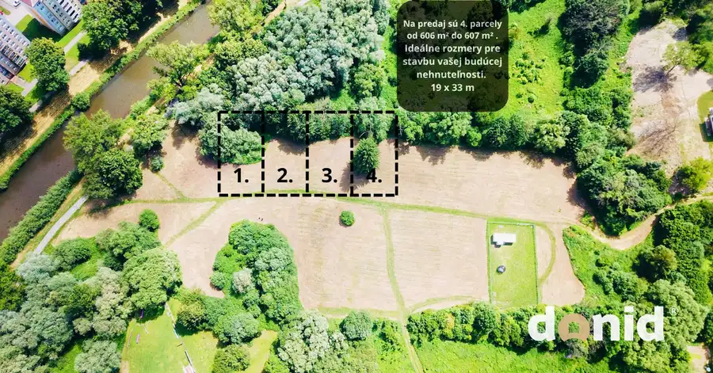
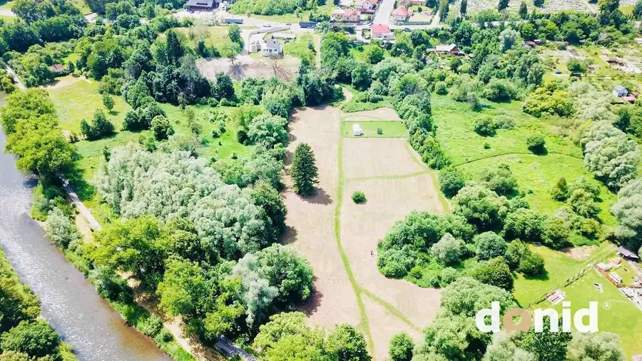
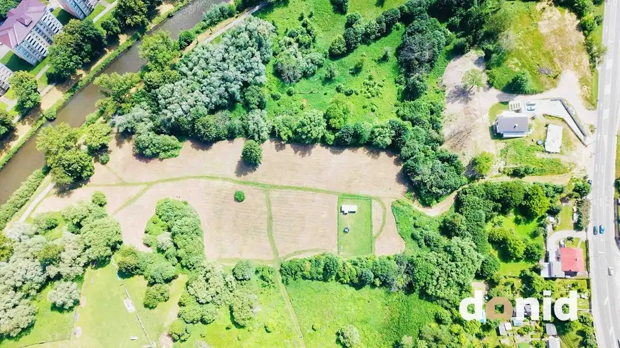

NA PREDAJ | 4 rovinnaté pozemky | Martin - Priekopa (pod Kolibou)
Martin




- Plocha606 m²
O nehnuteľnosti
Ponúkame na predaj 4 rovinaté pozemky s rozmermi 19 × 33 m, situované v atraktívnej časti Priekopa pod Kolibou, v meste Martin. Ide o výnimočnú príležitosť získať vlastný kus prírody v pokojnom prostredí plnom zelene, ideálny na rekreáciu alebo budúcu výstavbu. Základné informácie:Rozmery pozemkov: cca 19 × 33 mVýmery: od 606 m² do 607 m²Cena: 84 €/m² Lokalita a výhody:Katastrálne územie Priekopa – MartinTiché prostredie, ideálne na oddych a rekreáciuVýborná orientácia pozemkov – slnečné počas celého dňaPrístup z hlavnej cesty po poľnej komunikácii Inžinierske siete a využitie:Voda: dostupná formou studne (hlboká len 2 m)Elektrina, obecná voda a kanalizácia: v dosahuVyužitie: ideálne ako záhrada, s možnosťou osadenia mobilného domu či rekreačnej chatyV prípade akýchkoľvek otázok k danej nehnuteľnosti nás prosím neváhajte kontaktovať na tel. čísle +421 908 723 100 alebo e-mailom na ivan@donid.sk
Parametre
- Druh
- Záhrada
- Dátum zverejnenia
- 19. 06. 2025
- Dĺžka pozemku
- 33
- Elektrina
- Pri pozemku - 230 V
- Odpadové vody
- Pri pozemku - Kanalizácia
- Plocha pozemku
- 606 m²
- Plyn
- Nedostupné
- Prístupová komunikácia
- Trávnatá
- Terén pozemku
- Rovinatý
- Typ
- Predaj
- Voda
- Pri pozemku - Verejný vodovod
- Šírka pozemku
- 19